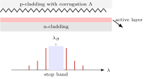

, and a uniform DFB lases on the two modes
, and a uniform DFB lases on the two modes Lateral confinement
Gain-guided stripe lasers inject current through a narrow contact; index-guided buried heterostructures surround the active stripe with lower-index material on all sides: lower threshold, stable single transverse mode, elliptical output beam (larger divergence across the thin junction). Longitudinal mode selection is the job of the gratings below.
DFB and DBR (derivation of the DFB modes)
A corrugation of period  couples forward and backward waves when (Kogelnik and Shank 1972). Coupled-mode theory (Bragg gratings) gives a stop band around
couples forward and backward waves when (Kogelnik and Shank 1972). Coupled-mode theory (Bragg gratings) gives a stop band around  where no mode propagates; the allowed modes sit symmetrically outside it, spaced like those of a cavity of length
where no mode propagates; the allowed modes sit symmetrically outside it, spaced like those of a cavity of length  :
:  , The two
, The two  modes have equal threshold; a
modes have equal threshold; a  phase shift in the middle of the grating (or an asymmetric facet coating) places one mode at with the lowest threshold: single-frequency operation with side-mode suppression > 40 dB. In a DBR laser the gratings are passive end mirrors; separate electrodes on the grating and phase sections tune the wavelength.
phase shift in the middle of the grating (or an asymmetric facet coating) places one mode at with the lowest threshold: single-frequency operation with side-mode suppression > 40 dB. In a DBR laser the gratings are passive end mirrors; separate electrodes on the grating and phase sections tune the wavelength.
Picture: DFB structure and spectrum

reflects only near the Bragg wavelength , so one longitudinal mode lases.VCSEL and external-cavity lasers
A VCSEL has a ≈ 1λ cavity with quantum wells between two DBR mirrors of 20–30 GaAs/AlAs pairs (, dielectric mirrors): the mode spacing (tens of nm) exceeds the gain width, so one longitudinal mode lases; circular, low-divergence beam; threshold below 1 mA; wafer-level testing; arrays (Soda et al. 1979; Dingle et al. 1974). External-cavity lasers close the cavity with a grating outside an AR-coated chip: kHz linewidths, tens of nm of tuning.
Quantum-well lasers
A well of thickness  quantises the motion across it:
quantises the motion across it:  above the band edge for electrons and holes (quantum wells). The step-like density of states puts more carriers at the band edge: lower transparency density, lower , higher differential gain, less temperature sensitivity; the emission shifts to . Strained wells and multiple wells (MQW) refine this.
above the band edge for electrons and holes (quantum wells). The step-like density of states puts more carriers at the band edge: lower transparency density, lower , higher differential gain, less temperature sensitivity; the emission shifts to . Strained wells and multiple wells (MQW) refine this.
Efficiencies and temperature
 (overall photons per electron); (slope above threshold);
(overall photons per electron); (slope above threshold);  .
. of a Fabry–Perot laser follows the gain peak (≈ 0.3–0.5 nm/K), jumping between modes (mode hops); a DFB follows continuously (≈ 0.1 nm/K): telecom lasers sit on thermo-electric coolers.
of a Fabry–Perot laser follows the gain peak (≈ 0.3–0.5 nm/K), jumping between modes (mode hops); a DFB follows continuously (≈ 0.1 nm/K): telecom lasers sit on thermo-electric coolers.
Direct modulation and chirp
Modulating the current modulates output power up to the relaxation-oscillation frequency (10–30 GHz, laser diodes); the carrier density also modulates the index, so the frequency follows the current (chirp, Henry factor). Chirp broadens the spectrum and, with fibre dispersion, limits directly modulated links at 1550 nm to tens of km at 10 Gb/s; longer links use a CW DFB and an external modulator.
Worked examples
- DFB wavelength: , µm, first order: µm. For µm the two lowest modes are at µm nm (1539.15 and 1540.85 nm).
- GaAs well, nm,
 , : meV, meV; emission at eV → 833 nm instead of 871 nm; meV.
, : meV, meV; emission at eV → 833 nm instead of 871 nm; meV. - Efficiencies of a 1310 nm DFB: mA, 8 mW at 40 mA and 1.5 V: slope 0.267 W/A, , , .
- Temperature: over +20 K an FP laser's gain peak moves ≈ 10 nm (several mode hops); a DFB moves ≈ 2 nm, more than a 100 GHz (0.8 nm) DWDM channel: thermal control is mandatory.
Engineering applications
DFB lasers for DWDM transmitters (1550 nm ITU grid), DBR and sampled-grating tunable lasers, VCSEL arrays at 850 nm for datacom and 940 nm for face recognition and LiDAR, external-cavity lasers for coherent communications and spectroscopy, QW and quantum-dot lasers for silicon photonics.
Exam-style exercise
A DFB laser must emit at 1550 nm with . (a) First-order grating period. (b) Second-order period (easier lithography). (c) With  µm, spacing of the two modes of a uniform grating. (d) Why is a shift used?
µm, spacing of the two modes of a uniform grating. (d) Why is a shift used?
Solution
(a) nm. (b) : 470 nm. (c) Each is µm nm from : 2.43 nm apart. (d) The two modes have equal threshold, so the laser may hop between them; the phase shift creates a single mode at inside the stop band with the lowest threshold.
Pitfall
The DFB lases beside the Bragg wavelength unless the grating is phase-shifted: answering "" for a uniform DFB misses the stop band.